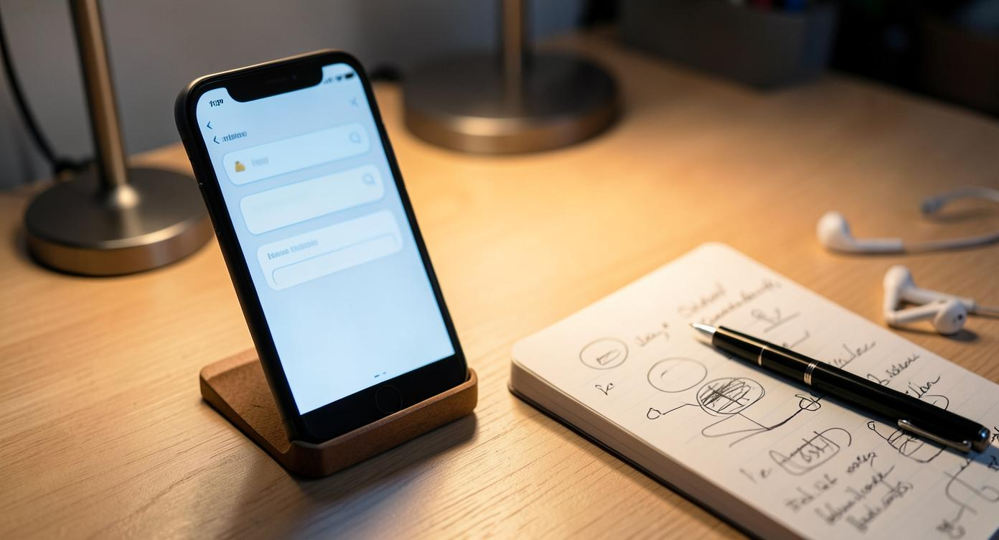
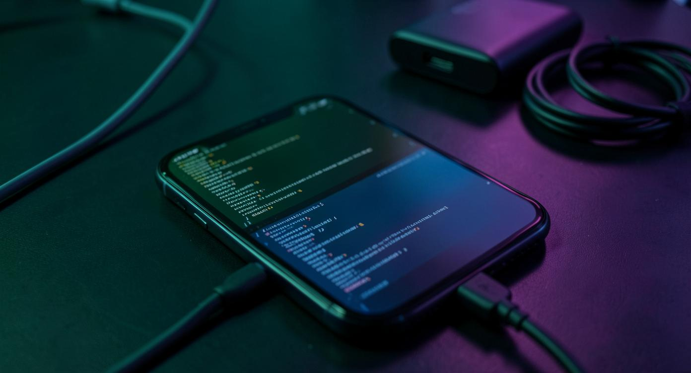

Phone Pe Claude Code: Free AI Models ke Saath Step-by-Step Setup
Claude Code को आम तौर पर लैपटॉप या डेस्कटॉप पर चलाया जाता है — एक टर्मिनल, Node.js और इंटरनेट, बस इतना ही चाहिए। लेकिन बहुत से लोगों के पास हर समय लैपटॉप नहीं होता। कॉलेज में फोन ही साथ रहता है, ट्रेन में यात्रा के दौरान फोन ही खुलता है, और घर पर भी लैपटॉप अक्सर किसी और काम में लगा रहता है। ऐसे में सवाल आता है — क्या यही चीज़ फोन पर चल सकती है?
जवाब है हाँ, और उसके लिए कोई रूटिंग, कस्टम ROM या पेड ऐप नहीं चाहिए। एक Android फोन, F-Droid से Termux (टर्मिनल ऐप), दो GitHub repo और एक-दो free AI provider की API key — इतने में पूरा setup हो जाता है। इस आर्टिकल में मैं शुरू से आखिर तक वही क्रम लिख रहा हूँ जिस क्रम में मैंने खुद यह चीज़ एक पुराने Android फोन पर चलाई थी। साथ में वे जगहें भी बताऊँगा जहाँ लोग अटकते हैं, क्योंकि यह setup community projects पर टिका है और हर फोन का व्यवहार थोड़ा अलग होता है।
छोटा जवाब: Termux को सिर्फ F-Droid से इंस्टॉल करें। Termux में claude-code-android repo का install स्क्रिप्ट चलाएँ, फिर FreeLLMAPI gateway को Node.js के साथ चलाएँ। Gateway में अपनी free API keys (Google AI Studio, Groq, OpenRouter) डालकर एक unified key कॉपी करें। हर बार Claude Code चलाने से पहले दो commands से base URL और token सेट करें — बस इतना ही। पूरा काम 30–45 मिनट में हो जाता है और इसमें लैपटॉप की ज़रूरत नहीं पड़ती।
यह setup असल में कैसे काम करता है?
इसे समझ लेना ज़रूरी है, क्योंकि अगर आपको पता होगा कि कौन सा हिस्सा क्या कर रहा है, तो कोई भी error आने पर आप खुद अंदाज़ा लगा सकेंगे। यहाँ तीन परतें हैं — एक टर्मिनल, एक coding agent और एक gateway जो free models तक पहुँच देता है।
Termux आपके फोन के अंदर एक छोटा Linux जैसा माहौल बना देता है। उसमें package manager काम करता है, इसलिए Node.js, git और Python जैसी चीज़ें इंस्टॉल हो सकती हैं। यह Android का सिस्टम नहीं तोड़ता — सब कुछ ऐप की अपनी स्टोरेज में चलता है।
Claude Code वह टूल है जो आपके प्रोजेक्ट की फाइलें पढ़ता है, बदलाव करता है और commands चलाता है। यह आम तौर पर Anthropic के अपने सर्वर से बात करता है, पर इसमें एक सुविधा है — आप ANTHROPIC_BASE_URL बदलकर उसे किसी दूसरे endpoint पर भेज सकते हैं। यही सुविधा इस पूरे setup की जान है।
FreeLLMAPI एक छोटा सा gateway है जो आपके फोन पर ही चलता है। यह अलग-अलग providers की free API keys को एक जगह रखता है और एक ही endpoint पर उन्हें उपलब्ध कराता है। जब Claude Code उस endpoint से कुछ माँगता है, तो gateway उसे आपकी keys में से किसी एक के ज़रिए आगे भेजता है।
| हिस्सा | क्या करता है | कहाँ चलता है |
|---|---|---|
| Termux | टर्मिनल और Linux जैसे packages | फोन में ऐप के रूप में |
| claude-code-android | Claude Code और ज़रूरी चीज़ें इंस्टॉल करता है | Termux के अंदर |
| FreeLLMAPI | free models का gateway, keys को संभालता है | Termux, port 3001 |
| बाकी providers | असली AI model चलाते हैं | इंटरनेट पर |
ध्यान रखिए, यह कोई Anthropic का official mobile setup नहीं है। ये दोनों repo community projects हैं। यानी यह काम करता है, पर आपको यह समझकर चलना होगा कि आप किसी और का लिखा स्क्रिप्ट अपने फोन पर चला रहे हैं। नीचे मैंने इस पर अलग से एक section रखा है।
शुरू करने से पहले ये चीज़ें जाँच लें
सबसे पहले यह देखें कि आपका फोन इस काम के लिए तैयार है या नहीं। ज़्यादातर नए फोन में कोई दिक्कत नहीं आती, पर पुराने या बजट फोन में एक खास बात फँसा सकती है — प्रोसेसर की आर्किटेक्चर।
- 64-bit Android (aarch64): यह सबसे ज़रूरी शर्त है। अगर फोन 32-bit है तो Node.js के नए builds नहीं चलेंगे।
- Android 11 या नया: सबसे आसान रास्ता। Android 8, 9 और 10 पर भी हो जाता है, बस install के समय दूसरी फाइल चुननी पड़ती है।
- कम से कम 2 GB खाली स्टोरेज: Node.js, packages और npm के downloads मिलाकर काफी जगह लगती है।
- अच्छा Wi-Fi: पहली बार में सैकड़ों मेगाबाइट डाउनलोड होता है। मोबाइल डेटा पर करेंगे तो पैकेज खत्म हो सकता है।
- 1–2 free AI provider account: Google AI Studio, Groq या OpenRouter में से किसी एक का होना ज़रूरी है, क्योंकि gateway को कहीं से तो model मिलेगा।
- 30–45 मिनट का समय: पहली बार में। दूसरी बार से यह काम दो मिनट का रह जाता है।
अगर आपका फोन इन शर्तों में फिट है, तो चलिए शुरू करें।
Step 1: Termux सिर्फ F-Droid से इंस्टॉल करें
यह पहला और सबसे ज़रूरी कदम है, और यहीं सबसे ज़्यादा लोग गलती करते हैं। Play Store पर भी Termux मिलता है, पर वह वर्ज़न बहुत पुराना है और उसमें packages की सूची टूटी हुई आती है। उस पर commands चलेंगे ही नहीं।
- फोन के browser में f-droid.org खोलें और F-Droid का APK डाउनलोड करके इंस्टॉल करें। Android पहली बार में "unknown source" की अनुमति माँगेगा — उस सेटिंग को उसी ब्राउज़र के लिए चालू करें।
- F-Droid खोलें, search में Termux लिखें और Termux को इंस्टॉल करें।
- Termux खोलें। पहली बार खुलने पर यह कुछ packages खुद इंस्टॉल करता है — उसे पूरा होने दें।
- अब यह command चलाएँ:
uname -mजवाब में aarch64 आना चाहिए। अगर armv7l या armv8l आया, तो यह फोन इस setup के लिए नहीं है — आगे के कदम काम नहीं करेंगे, इसलिए यहीं रुक जाएँ। अगर कुछ और आया तो फोन का मॉडल Google पर खोजकर देख लें कि वह 64-bit है या नहीं।
एक छोटी सलाह — Termux को इंस्टॉल करने के बाद उसे home screen पर रख लें और keyboard से अटैच कर लें। फोन का सॉफ्ट keyboard लंबी commands लिखने में परेशान करता है, खासकर जब आप API key जैसी लंबी चीज़ कॉपी-पेस्ट कर रहे हों।
Step 2: Claude Code इंस्टॉल करें (Repo 1)
अब Termux के अंदर Claude Code का setup करना है। इसके लिए community repo claude-code-android का install स्क्रिप्ट है जो ज़रूरी चीज़ें खुद इंस्टॉल कर लेता है। Termux में ये दो commands एक के बाद एक चलाएँ:
curl -fsSL https://raw.githubusercontent.com/ferrumclaudepilgrim/claude-code-android/main/install.sh -o install.sh
bash install.shस्क्रिप्ट दो सवाल पूछेगी — हाँ/ना में जवाब देते जाएँ। इसके बाद यह खुद काम करती है और इसमें 5–10 मिनट लगते हैं। इस दौरान स्क्रीन बंद न होने दें और ऐप से बाहर न जाएँ।
अगर आपका फोन Android 8, 9 या 10 पर है, तो दोनों commands में install.sh की जगह install-pinned.sh लिखें। इसका कारण यह है कि पुराने Android पर Node.js के नए वर्ज़न की कुछ libraries नहीं मिलतीं, इसलिए script एक जाँचा हुआ पुराना वर्ज़न लगाती है।
इंस्टॉल पूरा होने के बाद Termux को पूरी तरह बंद करके दोबारा खोलें। सिर्फ बंद करके नहीं — recent apps से हटाकर, फिर खोलें। ऐसा न करने पर नई commands "not found" कह सकती हैं, क्योंकि shell को नया path तभी मिलता है जब वह दोबारा शुरू होता है।
यहाँ एक बात साफ कर दूँ — इस step में Claude Code का binary इंस्टॉल हो जाता है, पर वह अभी किसी model से जुड़ा नहीं है। अगला step उसी कमी को पूरा करता है।
Step 3: FreeLLMAPI gateway चलाएँ (Repo 2)
यह दूसरा repo आपके free provider accounts को एक ही endpoint पर लाता है। पहले ज़रूरी packages इंस्टॉल करें:
pkg update
pkg upgrade -y
pkg install -y nodejs-lts gitअब देखें कि Node.js ठीक वर्ज़न पर आया है या नहीं:
node --versionजवाब में v22.13 या उससे ऊपर का वर्ज़न आना चाहिए। अगर पुराना वर्ज़न दिखे, तो pkg upgrade -y दोबारा चलाएँ। इसके बाद gateway को डाउनलोड करके चलाएँ:
git clone https://github.com/tashfeenahmed/freellmapi.git
cd freellmapi
npm install --no-audit --no-fund
npm run devयहाँ तीन चीज़ें हो सकती हैं और तीनों सामान्य हैं:
- better-sqlite3 की warning: इसे नज़रअंदाज़ कर दें। Termux पर यह package कभी-कभी build warning देता है, पर काम करता रहता है।
- esbuild script approve करने का सवाल: npm कभी-कभी build script की अनुमति माँगता है। approve करके
npm install --no-audit --no-fundदोबारा चलाएँ। - बहुत सारी lines का बहना: यह सामान्य है, gateway शुरू हो रहा है।
सबसे ज़रूरी बात — यह Termux window चलती रहनी चाहिए। इसे बंद करने का मतलब है gateway बंद, और फिर Claude Code को कोई model नहीं मिलेगा। इसीलिए आगे हम दूसरी session खोलेंगे, इसी window को बंद करके नया काम नहीं करेंगे।
Step 4: Free API keys जोड़ें और अपनी unified key कॉपी करें
Gateway चल रहा है, अब उसमें keys डालनी हैं। फोन के browser में यह address खोलें:
http://localhost:5173यह पता फोन के अंदर ही काम करता है, इसलिए यह ज़रूरी है कि browser उसी फोन पर खुले जिस पर gateway चल रहा है। अगर page न खुले, तो देखें कि Termux की वह window अभी भी चल रही है या नहीं।
Keys page पर जाकर अपने provider accounts की API keys एक-एक करके जोड़ें। तीन जगहें सबसे आसान हैं:
- Google AI Studio — free tier में रोज़ाना कुछ requests मिलती हैं। शुरुआत के लिए सबसे सीधा विकल्प।
- Groq — बहुत तेज़ जवाब देता है और free tier उदार है। छोटे कोड बदलावों में यह अच्छा लगता है।
- OpenRouter — कई models एक ही key से। इसमें कुछ models पूरी तरह free रहते हैं, पर उनकी सूची बदलती रहती है।

Keys जोड़ने के बाद उसी page के ऊपर आपकी एक unified key दिखेगी, जो freellmapi- से शुरू होती है। इसे कॉपी कर लें। यही key अगले step में लगेगी। इसे कहीं सुरक्षित नोट में रखें, क्योंकि बाद में हर बार यही चाहिए होगी।
अगर keys जोड़ने के बाद भी requests fail हों, तो पहले यह जाँचें कि key सही provider की है। Google AI Studio की key Groq में नहीं चलेगी — यह सबसे आम गलती है।
Step 5: दोनों को जोड़ें और Claude Code चलाएँ
अब Termux में नई session खोलें। Screen के बाएँ किनारे से दाएँ स्वाइप करें और "New session" चुनें। पुरानी session में gateway चलता रहेगा, इसलिए उसे छेड़ें नहीं।
नई session में ये दो commands चलाएँ, और बीच वाली लाइन में अपनी unified key डालें:
export ANTHROPIC_BASE_URL=http://localhost:3001
export ANTHROPIC_AUTH_TOKEN=freellmapi-aapki-key-yahan
claudeएक बारीक बात जो बहुत लोग गलत करते हैं — base URL के आगे /v1 मत लगाइए। Claude Code खुद उसे जोड़ता है। अगर आपने /v1 लगा दिया, तो requests गलत रास्ते पर जाएँगी और error आएगा, जबकि gateway बिल्कुल ठीक चल रहा होगा।
अब Claude Code आपके free models पर चल रहा है। पहली बार में यह थोड़ा धीमा लग सकता है, क्योंकि model provider के सर्वर पर चल रहा है और जवाब आने में कुछ सेकंड लगते हैं। साथ में यह भी देखें कि आपकी provider key की सीमा कितनी है — बहुत लंबा काम एक ही बार में देने से free tier जल्दी खत्म हो सकता है।
Step 6: Screen बंद होने पर भी चलता रहे
Android का सिस्टम battery बचाने के लिए background ऐप्स को सुला देता है। इसका मतलब यह है कि screen बंद होते ही Termux की process रुक सकती है और gateway बंद हो जाता है। इसे रोकने के लिए दो चीज़ें करनी हैं।
pkg install -y termux-api
termux-wake-lockसाथ में फोन की settings में जाएँ — Settings → Apps → Termux → Battery → Unrestricted। यह सेटिंग न करने पर बहुत से फोन कुछ मिनट बाद Termux को बंद कर देते हैं, और आपको लगेगा कि setup खराब हो गया।
अगर आपने Termux:API add-on इंस्टॉल किया है, तो वह भी F-Droid से ही लें। दोनों ऐप एक ही स्टोर से होने चाहिए, वरना वे आपस में बात नहीं कर पाते और termux-api packages बेकार error देते हैं।

काम पूरा हो जाने पर termux-wake-unlock चला दें। लगातार wake-lock लगाए रखने से फोन गरम होता है और battery तेज़ी से गिरती है — खासकर उन फोन पर जिनमें पुरानी battery है।
रोज़ चलाने का तरीका
पहली बार का setup एक बार का काम है। उसके बाद हर बार सिर्फ दो sessions खोलनी हैं। क्रम मायने रखता है — पहले gateway, फिर Claude Code।
# Session 1: gateway
cd freellmapi && npm run dev
# Session 2: Claude Code
export ANTHROPIC_BASE_URL=http://localhost:3001
export ANTHROPIC_AUTH_TOKEN=freellmapi-aapki-key-yahan
claudeअगर आप रोज़ यही करते हैं, तो दो छोटी आदतें काम आसान कर देती हैं। पहली — दोनों export lines को एक text file में रख लें और हर बार कॉपी कर लें, ताकि key बार-बार टाइप न करनी पड़े। दूसरी — Claude Code को उसी folder में चलाएँ जिस project पर काम करना है। अगर आप गलत folder में चलाएँगे, तो यह वहाँ की फाइलें पढ़ेगा, जो आप चाहते ही नहीं थे।
फोन पर लंबे काम करने की एक आदत और बनाएँ — काम को छोटे हिस्सों में बाँटें। "पूरा app बना दो" जैसी request फोन पर महँगी पड़ती है, क्योंकि हर बदलाव पर model को बहुत सारा संदर्भ पढ़ना पड़ता है और free tier जल्दी खत्म होता है। "पहले यह function ठीक करो, फिर बताओ" जैसी छोटी request में जवाब भी तेज़ आता है और tokens भी कम लगते हैं।
आम errors और उनका हल
| Error | वजह | हल |
|---|---|---|
| node:sqlite unavailable | Node.js का वर्ज़न पुराना है | pkg update, pkg upgrade -y, फिर pkg install -y nodejs-lts |
| concurrently: not found | npm install पूरा नहीं हुआ | npm install --no-audit --no-fund दोबारा चलाएँ |
| Port already in use | पुरानी session में gateway अभी चल रहा है | पुरानी session बंद करें, फिर npm run dev |
| Screen बंद होते ही रुक गया | Android ने Termux सुला दिया | Step 6 दोहराएँ — wake-lock और battery unrestricted |
| command not found: claude | Termux restart नहीं हुआ | Termux बंद करके दोबारा खोलें |
| 401 / unauthorized | Key गलत या base URL में /v1 | Key दोबारा कॉपी करें, /v1 हटाएँ |
इनमें से ज़्यादातर errors पहले दस मिनट में ही आते हैं। अगर कोई नई error आए जो यहाँ नहीं है, तो सबसे पहले यह देखें कि दोनों session चल रही हैं या नहीं। मेरे अनुभव में आधी समस्याएँ इसी एक वजह से होती हैं — gateway बंद हो गया और Claude Code को जवाब नहीं मिला।
Free models की असली सीमाएँ
यहाँ ईमानदार होना ज़रूरी है, क्योंकि "free" शब्द सुनकर बहुत लोग उम्मीद बहुत ऊँची रख लेते हैं और फिर निराश होते हैं। मुफ्त में चलने वाले models काम के हैं, पर वे पेड models जैसा अनुभव नहीं देते।
पहली सीमा — रोज़ की request limit। हर provider अपनी free tier में एक सीमा तय करता है। भारी काम करने पर वह सीमा एक-दो घंटे में खत्म हो सकती है। Gateway का फायदा यही है कि वह दूसरी key पर चला जाता है, लेकिन अगर आपके पास सिर्फ एक ही key है तो इंतज़ार करना पड़ेगा।
दूसरी सीमा — context window। Free models अक्सर कम संदर्भ संभालते हैं। इसका मतलब है कि बहुत बड़ी file या पूरा प्रोजेक्ट एक बार में पढ़ाने पर model कुछ भूलने लगता है। इसलिए फोन पर काम करते समय छोटी files और साफ निर्देश ज़्यादा काम आते हैं।
तीसरी सीमा — जवाब की गुणवत्ता। छोटे बदलाव, syntax सुधार, error समझाना, test लिखना — इन सब में free models अच्छा काम करते हैं। लेकिन बड़े architecture के फैसले या जटिल debugging में वे अक्सर अधूरा जवाब देते हैं। मेरी राय में फोन पर इन models को "साथी" की तरह इस्तेमाल करें, "ठेकेदार" की तरह नहीं।
चौथी सीमा — बदलती सूची। Free tier की शर्तें और model के नाम हर कुछ हफ्तों में बदलते रहते हैं। जो model आज मुफ्त है, वह अगले महीने पेड हो सकता है। इसलिए keys page पर समय-समय पर देखते रहें कि कौन सा model अभी काम कर रहा है।
सुरक्षा और सावधानी
यह section छोटा है, पर सबसे ज़रूरी है। यहाँ जो भी चल रहा है, वह community projects पर टिका है — Anthropic का official mobile setup नहीं है।
- स्क्रिप्ट पढ़कर चलाएँ:
bash install.shचलाने से पहलेcat install.shसे देख लें कि वह क्या-क्या कर रही है। यह अच्छी आदत है और इसमें एक मिनट लगता है। - API keys सिर्फ फोन में रखें: किसी public repo, screenshot या group chat में key न डालें। अगर key कहीं चली गई, तो उसे provider के dashboard से तुरंत हटा दें और नई बनाएँ।
- आपका कोड provider तक जाता है: जब Claude Code कुछ पढ़ता है, तो वह हिस्सा model provider के सर्वर पर जाता है। कंपनी के private कोड, passwords वाली files या client का डेटा इस setup में मत खोलें।
- Public Wi-Fi पर सावधानी: gateway localhost पर चलता है, इसलिए वह बाहर से खुला नहीं होता — यह अच्छी बात है। पर keys जोड़ते समय भरोसेमंद नेटवर्क ही इस्तेमाल करें।
- फोन गरम हो सकता है: लंबे काम में Termux, gateway और browser तीनों चलते हैं। ब्रेक लें और फोन को चार्जिंग पर छोड़कर लगातार घंटों काम न करें।
एक और बात — अगर आप किसी दूसरे का फोन इस्तेमाल कर रहे हैं, तो यह setup मत करें। इसमें आपकी API keys और आपकी project files उस डिवाइस पर रहती हैं।
किसे यह setup करना चाहिए और किसे नहीं?
यह तरीका उन लोगों के लिए बहुत काम का है जिनके पास लैपटॉप नहीं है या जो दिन में ज़्यादातर समय फोन पर होते हैं। स्टूडेंट्स जो कॉलेज में छोटे scripts, assignments या practice problems पर काम करते हैं — उनके लिए यह अच्छा है। जो लोग यात्रा में हैं और सिर्फ कुछ छोटे बदलाव करने हैं — उनके लिए भी।
लेकिन अगर आप रोज़ बड़े प्रोजेक्ट पर काम करते हैं, तो फोन इसका विकल्प नहीं है। छोटी स्क्रीन, सॉफ्ट keyboard, सीमित RAM और free tier की सीमाएँ मिलकर काम धीमा कर देती हैं। ऐसे में फोन को "आपातकालीन विकल्प" मानें, मुख्य मशीन नहीं। 4GB RAM वाले फोन पर gateway और Claude Code दोनों चलाना भारी पड़ सकता है — ऐसे फोन पर एक ही बार में एक session रखें।
मैंने इस setup से क्या सीखा?
सबसे बड़ी सीख यह रही कि असली रुकावट तकनीक नहीं, आदतें होती हैं। शुरुआत में मैं हर बार सब कुछ दोबारा सेट करता रहा और परेशान होता रहा। जब मैंने दोनों sessions का क्रम पक्का कर लिया और export lines एक नोट में रख लीं, तब यह काम दो मिनट का रह गया।
दूसरी सीख — free models के साथ धैर्य ज़रूरी है। वे कभी-कभी अधूरा जवाब देते हैं, कभी गलत file में बदलाव कर देते हैं। इसलिए हर बदलाव के बाद खुद देख लें कि क्या बदला। फोन पर git इस्तेमाल करना सीख लें — एक git diff आपको बता देगा कि model ने कहाँ हाथ लगाया है, और गलत बदलाव एक command में वापस हो जाएगा।
तीसरी सीख — यह setup सीखने के लिए शानदार है। जब आपके पास बड़ी मशीन नहीं होती, तब आप छोटी-छोटी चीज़ें गहराई से समझते हैं। मेरे लिए यह फोन वाला प्रयोग एक अच्छा अभ्यास बना — टर्मिनल, packages, ports और environment variables, ये सब इसमें हाथ से समझ आते हैं।
अक्सर पूछे जाने वाले सवाल
क्या इसके लिए फोन रूट करना पड़ता है?
नहीं। Termux सामान्य ऐप की तरह इंस्टॉल होता है और उसे root की ज़रूरत नहीं होती। यह Android के सिस्टम को नहीं बदलता।
क्या iPhone पर भी ऐसा हो सकता है?
सीधे नहीं। iOS में Termux जैसा टर्मिनल ऐप नहीं है और Node.js के packages चलाने की छूट नहीं है। इस पूरी विधि की नींव Android + Termux है।
क्या Claude Code paid subscription के बिना चलेगा?
हाँ, इस setup में आप Anthropic की subscription की जगह free provider keys इस्तेमाल करते हैं। पर याद रखें, इसका मतलब यह नहीं कि आपको Claude के असली models मिल रहे हैं — जवाब आपके provider के model से आते हैं।
कितनी keys जोड़नी चाहिए?
शुरुआत में एक-दो ठीक हैं। अगर आप रोज़ काम करते हैं, तो दो अलग providers की keys रखें — एक की सीमा खत्म होने पर दूसरी काम आती है।
क्या यह मुफ्त में हमेशा चलेगा?
नहीं, इसकी कोई गारंटी नहीं। Free tier की शर्तें providers बदलते रहते हैं और community repo भी समय के साथ अपडेट होते हैं। समय-समय पर दोनों जाँचते रहें।
निष्कर्ष
फोन पर Claude Code चलाना कोई जादू नहीं है — यह तीन चीज़ों का जोड़ है। Termux टर्मिनल देता है, install स्क्रिप्ट Claude Code और Node.js लगा देती है, और FreeLLMAPI आपकी free keys को एक endpoint पर ले आता है। बाकी सब क्रम और आदतों का खेल है।
अगर आप आज ही शुरू करना चाहते हैं, तो इस क्रम में चलें — F-Droid से Termux, फिर uname -m से जाँच, फिर repo 1 का install, फिर FreeLLMAPI, फिर keys, फिर दो export commands और claude। पहली बार में 30–45 मिनट लगेंगे। दूसरी बार से यह दो मिनट का काम रह जाएगा।
अगर आप AI टूल्स के बारे में और पढ़ना चाहते हैं, तो हमारी Top Free AI Websites की लिस्ट और ChatGPT से AI Image बनाने की गाइड भी देख लें। बिल्कुल शुरुआत से सीखना है तो Basic Computer Fundamentals के नोट्स मदद करेंगे।
स्रोत: claude-code-android, FreeLLMAPI, और Termux की official साइट termux.dev. यह गाइड @snnubbo के community नोट्स पर आधारित है; यह Anthropic का official mobile setup नहीं है।
Repo, packages और free tier की शर्तें बदलती रहती हैं। Commands चलाने से पहले एक बार repo का README देख लें और स्क्रिप्ट पढ़कर ही चलाएँ।